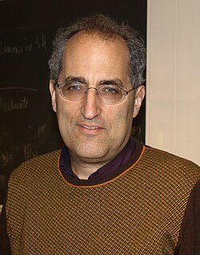

1951-
Edward Witten

Portrait: Ojan, Public domain, Wikimedia Commons.
Events (10)
- 1957Calabi conjecture (Calabi-Yau metrics)
developer · Geometry
- 1982Supersymmetry and Morse theory
developer · Topology
- 1983Gauge theory transforms four-manifold topology
developer · Topology
- 1987Elliptic cohomology and topological modular forms
developer · Algebraic topology
- 1987Geometric Langlands and its physics
developer · Algebraic geometry
- 1988Topological and conformal field theory as axioms (Atiyah, Segal, Witten)
originator · Algebraic topology
- 1991Two-dimensional gravity and the moduli space of curves
originator · Geometry
- 1994Heegaard Floer and Seiberg-Witten theory
originator · Topology
- 1994Seiberg-Witten invariants
originator · Topology
- 2006Kapustin-Witten: geometric Langlands as S-duality
developer · Number theory